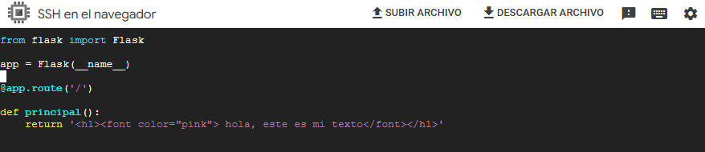
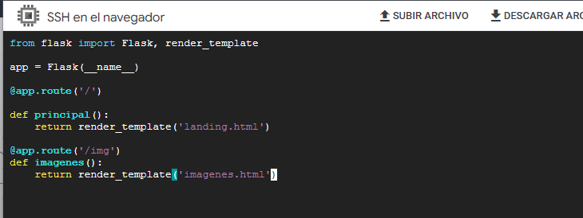
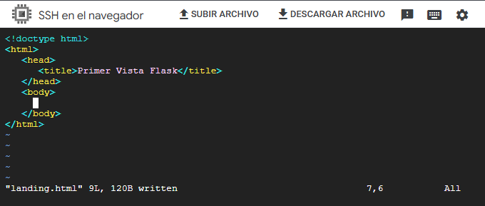
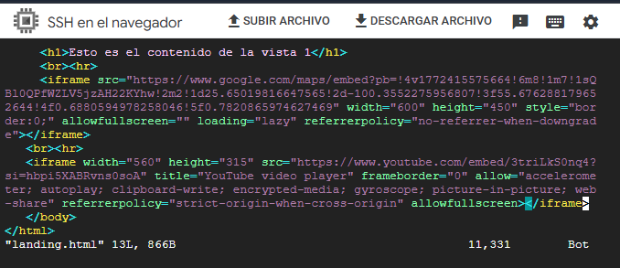
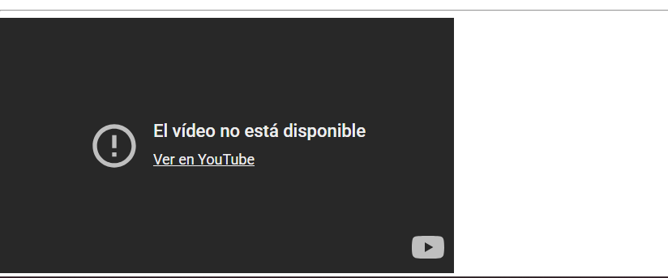

🎯 Objetivo de la actividad
Aprender a desplegar aplicaciones web creadas con Flask en un entorno de servidor real, configurar reglas de firewall para habilitar acceso externo y desarrollar tres versiones de una misma app: App01, App02 y App03. Tambien se practico la gestion de procesos en Linux para liberar puertos ocupados y reiniciar el servidor correctamente en nuevas sesiones.
⚙️ Configuracion inicial (App01)
Se creo el proyecto y el primer archivo con una ruta basica:
cd Proyectos/
mkdir App01
cd App01
vi app.py
from flask import Flask
app = Flask(__name__)
@app.route('/')
def principal():
return 'hola, este es mi texto'
Figura 1: Codigo inicial de App01 devolviendo texto plano.
🌐 Variable FLASK_APP y ejecucion
Para ejecutar Flask se definio la variable de entorno y luego se levanto el servidor escuchando en todas las interfaces:
export FLASK_APP=app.py
echo $FLASK_APP
flask run --host=0.0.0.0🔥 Regla de firewall
Se habilito el puerto TCP 5000 para trafico de entrada en Google Cloud con una regla tipo ingress, permitiendo acceso externo a la aplicacion.

Figura 3: Regla de firewall permitiendo tcp:5000.
🧟 Procesos que bloquean el puerto
Cuando el puerto 5000 quedo ocupado, se identificaron procesos de Flask y se liberaron con kill:
ps -ef | grep flask
kill -9 [PID]Con esto se pudo reiniciar la app sin conflicto de puerto.
🧩 Evolucion App01 → App02
Se copio App01 para crear App02 y se agrego HTML en la respuesta:
cp -fR App01 App02
from flask import Flask
app = Flask(__name__)
@app.route('/')
def principal():
return 'hola, este es mi texto
'Diferencia principal: App01 muestra texto plano, App02 renderiza HTML con formato.

Figura 4: App02 devolviendo encabezado HTML con color.
🎬 App03 con templates, mapa y video
En App03 se separo presentacion usando templates y render_template:
mkdir templates
cd templates
vi landing.html
from flask import Flask, render_template
app = Flask(__name__)
@app.route('/')
def principal():
return render_template('landing.html')
@app.route('/img')
def imagenes():
return render_template('imagenes.html')
Figura 5: App03 usando render_template para servir vistas HTML.

Figura 6: Creacion de landing.html en el editor vi.

Figura 7: Integracion de mapa y video mediante iframes.

Figura 8: Evidencia del iframe de video en la vista.
📘 Aprendizajes
Servidor Flask en VM
Se practico el despliegue con flask run --host=0.0.0.0 y el flujo de reinicio al abrir nueva sesion.
Red y seguridad
Se entendio la relacion entre aplicacion y red, abriendo el puerto 5000 en firewall para acceso externo.
Escalamiento de la app
Se evoluciono de texto plano a HTML y luego a templates con contenido multimedia, separando logica y presentacion.